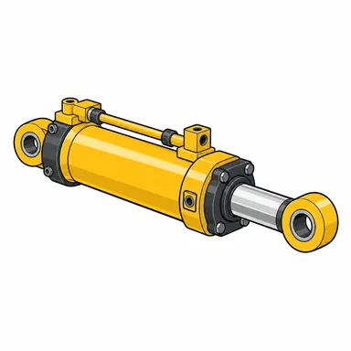
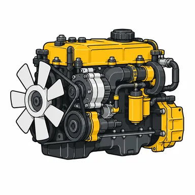
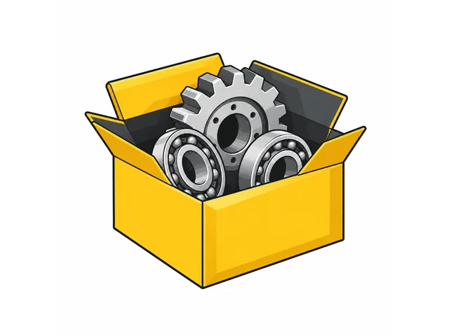
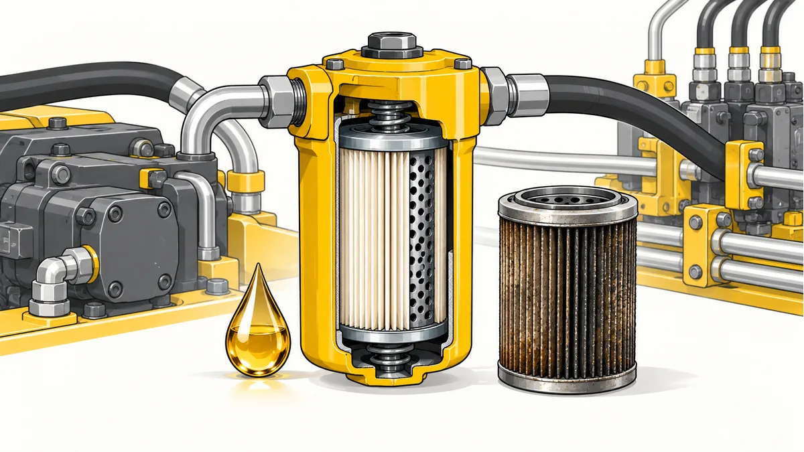

CatPart
графическая система
Бренд CatPart — каталог и подбор запчастей компании-поставщика СМ ТЕХНО.
30 октября 2026
Внутреннее руководство
Роль и голос
CatPart помогает найти и поставить запчасти для техники Caterpillar по России. СМ ТЕХНО — поставщик, не производитель и не официальный дилер Caterpillar. Говорим спокойно, точно и по делу: оригинальные детали и качественные аналоги, в наличии и под заказ, подбор по артикулу, каталогу, фото или описанию.
Не обещаем сроки, склад, стаж, дилерский статус или производство, если это отдельно не подтверждено. В каждом обращении подтверждаем цену и наличие менеджером.
Цвета
#FFCD11
Акцент, кнопки, маркеры
#20252B
Контур, шапка, текст
#F7F5EF
Фон брендбука, мягкие поверхности
#FFFFFF
Иллюстрации и карточки
Типографика
Inter — основной шрифт интерфейса: 400 для текста, 600 для подписей, 800 для заголовков. Если шрифт недоступен, используем Arial без подмены характера. Короткие технические номера допускают ui-monospace.
Графический стиль Б
Техническая editorial-иллюстрация: белый фон, графитовый контур, золотисто-жёлтые и стальные серые плоскости, 2–3 тона, мягкая контактная тень, единый трёхчетвертной ракурс. Объект целиком в центре с безопасным полем. Никаких логотипов, надписей, номеров, брендов Caterpillar и мелких деталей.




Правила применения
Правильно
- Одна деталь или одна понятная сцена.
- Единая камера, масштаб и поля.
- Alt описывает предмет, не обещание.
- WebP: иконка 256–384px ≤30KB; статья 1200×675 ≤180KB; thumb 600×338 ≤65KB.
Не используем
- Производственные цеха, заводы и заявления о производстве.
- Логотипы и текст внутри картинки.
- Растровые PNG в публичной разметке, если есть WebP-derived.
- Случайные фото товара вместо исходной детали.
Процесс ImageGen → WebP
- Выбрать semantic name и тему из реестра.
- Промпт: ONE isolated square technical editorial illustration; crisp graphite outlines; industrial golden yellow and steel grey; clean white background; centered full subject with 16% whitespace; same three-quarter camera; no logos, lettering, numbers, scenery.
- Проверить смысл, целостность объекта, отсутствие текста и фирменных знаков.
- Сохранить исходник в
run/design-assets/source, производную — вlocal-dev/site/assets/img/<group>/name.webp. - Resize Pillow с LANCZOS, RGB WebP, quality 78–84, проверить размеры и вес.
Имена и alt
catalog-icons/hydraulics.webp benefits/in-stock.webp articles/filters-and-fluids.webp articles/filters-and-fluids-thumb.webp
Имена файлов — английские semantic slugs, без дат и случайных ID. Alt короткий: «Гидравлика», «В наличии», «Фильтры и рабочие жидкости». Декоративные повторы рядом с заголовком получают пустой alt.
Контакты
СМ ТЕХНО
info@cmteh.ru
+7 (812) 436-82-99 · +7 911 921-22-14 · +7 965 785-57-85 · +7 965 818-56-87
г. Санкт-Петербург, Кондратьевский проспект, 2, корп. 4, офис 704/1